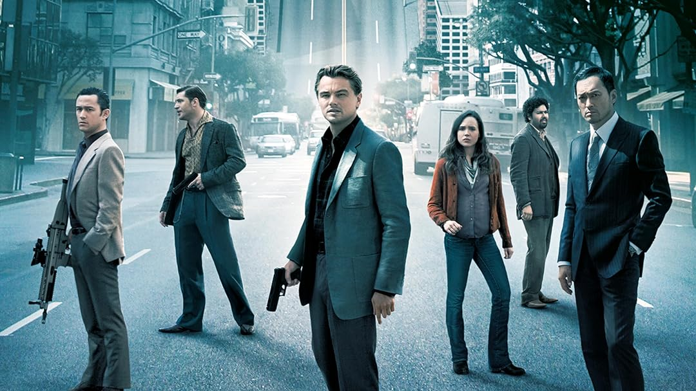

Inception : Une Plongée Cinématographique dans les Replis de l'Esprit
Date : 8 février 2024
La Réalité Redéfinie
"Inception", le chef-d'œuvre de Christopher Nolan, catapulte le public dans un univers fascinant où les rêves s'entrelacent et la réalité devient un labyrinthe déroutant. Sorti en 2010, ce film de science-fiction captivant a non seulement capturé l'imagination du public mais a également redéfini les limites du cinéma contemporain.
Scénario : Les Rêves en Couches et l'Art de l'Intrigue
Nolan, en tant que maître manipulateur d'histoires, tisse un scénario complexe et intrigant. Les différentes couches de rêves, avec leurs propres règles et réalités, créent un écheveau narratif qui défie l'intellect du spectateur. Chaque rebondissement est méticuleusement conçu, offrant une expérience cinématographique qui invite à la réflexion longtemps après le générique final.
« Le plus simple des détails peut ouvrir la porte à des possibilités infinies. »

Direction Artistique et Effets Visuels : L'Éclat Visuel de l'Onirisme
La direction artistique de "Inception" est une plongée artistique dans l'imaginaire. Les décors surréels, des scènes de gravité altérée aux rues pliantes, repoussent les limites de l'imagination. Les effets visuels, combinés à une utilisation astucieuse des décors pratiques, créent une esthétique qui va au-delà du simple divertissement, plongeant le public dans une réalité alternative.
« Nolan transcende les limites de l'écran avec une vision qui éblouit et questionne notre propre perception. »
Interprétation : DiCaprio et l'Équipe d'Acteurs, Maîtres du Rêve Éveillé
Leonardo DiCaprio livre une performance remarquable en tant que Dom Cobb, un homme tourmenté par son passé. L'ensemble du casting, comprenant des talents tels que Joseph Gordon-Levitt, Ellen Page et Tom Hardy, donne vie à des personnages riches en nuances. Leur dynamique complexe et les émotions palpables contribuent à l'immersion dans cet univers éthéré.
« DiCaprio offre une performance émotionnelle qui ancre le film dans la réalité malgré son sujet fantastique. »

Bande Sonore : La Symphonie des Rêves et des Réalités
La musique envoûtante de Hans Zimmer, avec son "Braaam" signature, accompagne magistralement chaque scène. La symphonie oscille entre le tumulte frénétique des séquences d'action et la subtilité émotionnelle des moments poignants, renforçant l'impact visuel et émotionnel du film.
« La bande sonore de Zimmer devient une extension de l'expérience, amplifiant les émotions et guidant le spectateur à travers les méandres du rêve. »
Conclusion : Une Odyssée Cinématographique Inoubliable
"Inception" n'est pas simplement un film, c'est une expérience. Christopher Nolan transcende les frontières de la réalité pour nous offrir une odyssée cinématographique inoubliable. Entre scénario captivant, direction artistique audacieuse et performances éblouissantes, "Inception" se dresse comme un monument dans l'histoire du cinéma, un rêve éveillé qui continue de hanter les esprits bien après la dernière image.
« Dans l'architecture de l'esprit de Nolan, chaque séquence est une porte vers l'inconnu, invitant le public à explorer les profondeurs de son propre subconscient. »